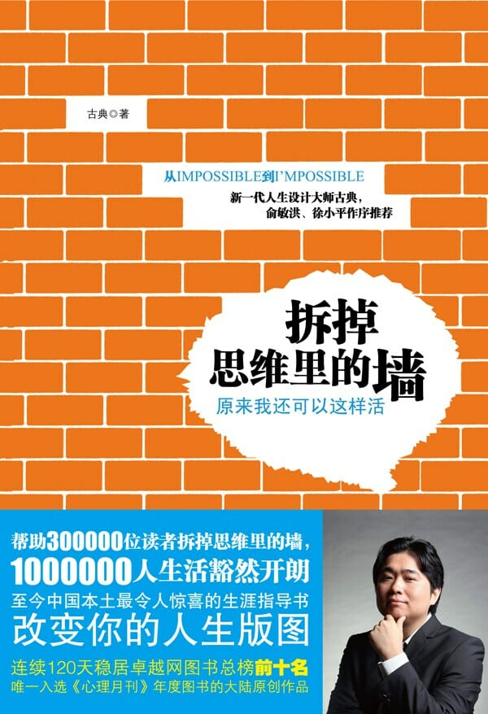

注：【】部分为笔者心得，非原文摘抄。
- 投资自己，而不是投资一套房子！
- 【一套房子得扼杀多少梦想？】
- 从职业发展理论来说：一个成功的职业发展人士，10 年后一个月的收入是十年前一年的 10 倍。
- 成功不是由买房来决定的。
- 对于那些事业没有最后定型，还有抱负、有理想的年轻人来说，40 岁之前租房为好。——王石
- 经济不独立就一定意味着梦想不独立。
- 只要你内心坚定，只要你先相信：这个世界没有谁都能活下去，而且活得很好，你就会找到属于自己的幸福。
- 能力 = 天赋 × 时间
- 外物是无法完全掌控的，而我们又无比依赖这些东西。
- 既不相信自己，又随时害怕失去。我们终将被奴役，成为安全感的奴隶。
- 【孩子长大后能取得多大的成就，往往取决于小时候父母给他多大的自由发挥空间。】
- 上帝不是要你成功，他只是要你尝试。——特蕾莎修女
- 在北京，如果你想搞废一个人，那就提供一个没有经济压力、随时可以上网看书吃饭的房子吧。
- 远离那些让你容易获得安全感的事情！
- 站在阳光里，你会慢慢晒走黑暗。
- 给自己一个恐惧保险箱。
- 恐惧有三个层次，第一个层次是恐惧事情本身；第二个层次是害怕失去背后的价值；第三个层次，也就是真正的恐惧，是你觉得自己没有能力去应对这个失去。
- Fuck you! That’s me! Anyway!
- 恐惧就是这样一个懦夫，当你触及它的底线，接受事情最坏的结果，然后开始准备和它大干一场的时候，它早就不知道躲到哪里去了。
- 当你找到内心最深的恐惧，把脸转向它，准备作战，恐惧就会烟消云散。
- 既然坚持没有获胜的希望，为什么不放弃？
- 如果我失败了，新来代替我的那个家伙，他会怎么办？既然这样，为什么我们不这样去做？
- 那些关在自己的新房里，整天盘算别人的人；那些躲在自己小窝里，整天等待别人搭救的人；那些躺在优厚的物质条件之上，惶恐地担心失去的人；那些内心没有安全感的人，你们能够做些什么？
- 支持别人是这个世界上最安全的事情，它永远不会失败。
- 安全感是给出来的，不是拿回来的。
- 【安住当下便是禅。】
- 乐趣来源于全情投入，而不是投入后的结果，正是因为这样，乐趣可以是无条件的。
- 【不要用“装 B”来评价在某方面比你优秀的人，这样百害而无一利，而要告诉自己：“我要努力早日超越那个 B，成为 A！”】
- 投入是热爱生命的钥匙。
- 当一个人为了工作本身而不是工作后的工资来做事情的时候，他往往能够把工作做到最好，也一定会收到最多的报酬。
- 吊儿郎当的人永远找不到真正的兴趣！
- 当一个人对自己的生命开始用“不感兴趣”来搪塞时，生命也开始对他不感兴趣了。
- 带着关爱而不是期待地投入生活，你会发现能力与乐趣接踵而来。
- 很少人能够拥有的东西是，确切地知道自己每一天在做什么，而且很确定应该怎么做。
- 【你看到的世界是什么样，取决于你怎样看世界——命由天定，运随心转。】
- 性格与星座毫无关系！
- 人们真的会变成自己觉得“应该成为”的人。
- 人们宁愿自我欺骗，也不愿意相信自己是被欺骗的。
- 我们按照自己过去的经验和记忆，处理我们看到的部分世界，然后在我们脑子里面构建一个自己的世界。
- 我们就是自己生命的巫师，我们给自己构建了一个幻想世界，然后在现实中让这个幻想慢慢实现。
- 【无知便是福。】
- 在今天这个变化多端的世界，我们最大的危险不是外界的压力和竞争，而是我们内心的模式。
- 好坏心态的背后，是关于世界的不同假设而决定的。
- 选择不对，努力白费，错误的努力比不努力还要可怕。
- 只有当你全力投入的时候，你才会从工作中获得快乐。
- 虽然我们不能改变我们的过去，我们却能改变对于我们过去的看法。
- 【成功无定律。】
- 成功永远是小概率事件。
- 成功学识传奇还是历史？你用尽全力模仿的那些故事，有多少是真实的？
- 说理不过就搞人身攻击，这是大部分无能者的思维方式。
- 坚持不等于成功，坚持只是成功的必要工具之一。放弃也是成功的必要工具。
- 自己坚持的是结果，放弃的是方式。
- 很多东西是无法模仿的，这就是生活的逻辑。
- 【在我眼里，成功学书籍早已被归类为地摊文学。】
- 这个世界上没有人可以只是依靠从众而成功。
- 什么是你人生的真正目标？就是那些你不会随着外界环境改变而改变的目标。
- 【那些所谓的“人生导师”，当他们受众的人生出现问题的时候，很显然，他们负不起责任，更显然的是，他们根本不会去负责任。】
- 你的天花板是别人的地板，而你总是向上看，从来没有留意过窗边的风景。
- 【不冒险才是最危险的。】
- 兴趣的三种境界：兴趣、乐趣和志趣。
- 如果一个东西过于完美，那么一定是有问题的。
- 如果你真的找不到一个工作，那就自己创造一个吧！
- 职业是自身天赋和现在世界局势的结合。
- 一件事情的价值，不取决于现在你判断的价值，而取决于在未来情况中的价值，这就叫做未来价值。
- 平台、资源、眼界、机会、好老板、失败的经验，这都是未来会升值的潜力生命股票，年轻的时候，即使牺牲点别的什么立即可得的利益，也要购买这些东西，它们会在未来的时间里面，增值百倍。
- 沉没成本其实是已经损失的成本，为了这个损失而追加成本，最后只会头破血流。
- 正是因为他们缺乏真正的目标，他会下意识地进入一切真或假的机会，却在真正需要坚持的时候落荒而逃。
- 航行者最终能走出去很远很远，穿过那些风暴，走到自己想去的地方。漂泊者则被梦想诅咒，一辈子胡乱漂泊在海上。
- 你愿意坚强地掌控，还是愿意自怜地受害？
- 受害者深深坚信，自己快乐与否、成功与否掌握在他人手中。
- 对生命屈服有很多种，最可怕的是那种喜欢被奴役。
- 不管你跑到哪里，世界都是不公平的，我们既无法让这个世界永远公平，也找不到一个永远公平的地方。
- 学会如何面对不公平，远远比学会如何评价不公平重要。
- 不公平是我们生命中的契机，是生命提供给我们，让自己和世界变得更加美好的领导机会。
- 你的生命就像你的家。因为你的不坚持，却让别人进来布置。但是你不要忘了，在里面住一辈子的还是你啊。
- 让别人停止之一的最好办法，就是尽快开始你的行动，然后用事实证明给他们看！
- 在我们今天这个物欲横流、价值单一、家庭压过自我的世界，坚持自己的想法是一件需要勇气但是绝对值得的事情。
- 在人生的董事会上，你永远是最大的股东。
- 幸福是一种转换力。
- 当一个人等待与拖延的成本，远远高于他真正开始行动所需要的成本，他就会慢慢陷入越等待越不行动的怪圈。
- 死是一件始终会到来的事情，是一件无论你做什么也不会错过的事情。那你又何必这么急呢？——史铁生
- 我们真正的痛苦，来自于因耽误而产生的持续的焦虑，来自于因最后时刻所完成项目质量之低劣而产生的负罪感，还来自于因为失去人生中许多机会而产生的深深的悔恨。——尼尔·菲奥里
- 滚石不生苔，转行不聚财。
- 只有那种不可抑制想开始的开始，才是有结果的开始；而那种能够等几次就没有了的开始，基本上属于冲动。
- 花费你的一部分过去，去购买一个未来，那就是一个开始的价值。
- 如果你没有一个好的开始，不妨试试看一个坏的开始吧。因为一个坏的开始，总比没有开始强。而完美的开始，则永远都不会来到。
- 【不要随大流，因为大流都是平庸的。】
- 一旦你开始用金钱来代表成就，用价格来代表爱情，用称来称感情，生活的幸福就被你毁灭，是理所当然的。
- 同样的时间，为什么不分享幸福，而去分享痛苦呢？